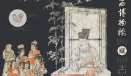

刘震云：有吃瓜群众，证明生活中的大戏接连不断
编者按：刘震云出上一本小说，已经是五年前了。《我不是潘金莲》里，他讲了农村妇女李雪莲告状的故事，后来经过导演冯小刚和演员范冰冰的演绎，李雪莲还成了个特别出名的女人。暌违五年，刘震云推出新作《吃瓜时代的
11-10 10:00
《未央歌》第二期讲述胡德夫和《橄榄树》的故事，万芳作为嘉宾，与胡德夫一起回顾台湾民歌的“李泰祥时代”。华语乐坛天后张惠妹倾力推荐，镜头前，阿妹称胡德夫为“叔叔”，她说，“胡老师不仅是民歌开创者，在台湾少数民族歌手里，他也是所有人的榜样。”
“知识付费”表面上是给人们适应不同处境的知识，可是，谁又会仔细想过，这些知识制造的过程都是标准化操作，而制造者的首要目的，则是考虑该如何通过它来赚钱。
她推翻了很多“红学”专家既定的结论，比如《红楼梦》并没有反礼教，贾宝玉曾经喜欢过薛宝钗，林黛玉只是一个没有长大的小女孩。类似的很多讲法，让她的听众和读者在网上分成了泾渭分明的两拨人。

编者按：刘震云出上一本小说，已经是五年前了。《我不是潘金莲》里，他讲了农村妇女李雪莲告状的故事，后来经过导演冯小刚和演员范冰冰的演绎，李雪莲还成了个特别出名的女人。暌违五年，刘震云推出新作《吃瓜时代的
“我认为文学应该对人的情操有所影响，比如关心人，感到希望，发现生活是充满诗意的，等等。但是这种影响是很间接的，潜在的，不可能像阿司匹林治感冒那样有效。我希望我的作品能滋润人心。”
此次展览以“天似穹庐”和“人亦黄土”两部分展出北朝和宋金元的12组（89件）墓葬壁画，其中展示的三件北朝壁画分别来自忻州九原岗北朝壁画墓、太原市北齐娄叡墓和朔州水泉梁北齐壁画墓，展览现场将还原水泉梁北齐壁画的墓室。
从早期的“天书”创作，到后来的“新英文书法”，近年的“地书”以及多媒体动画“汉字的性格”，包括山水画中的文字，还有“新葡文书法”，知名当代艺术家徐冰数十年的艺术创作始终与文字相关。
时装版画最初是一幅幅独立的版画，是早期的服装样本和杂志中的插图或扉页。由于这些版画刻画精细、印刷精美，具有独立的欣赏价值，所以也常被装进镜框，挂在墙壁上作装饰。
浦东代表的是22世纪的魔幻之都，甚至超过了好莱坞电影的表现，这种科幻式想象难以用文化史的角度来解读。我们生活在“将来时”为主的生活世界中，面对着电脑和机器人，无穷尽的想象怪物。以后人类的幻想和解释都被机器取代了，我很担心，因为我是老式的人文主义者。
当前这场人工智能革命实质是对“智能”认识的某种退步，AlphaGo的工作原理是仿生学，而人类智能的内核——创造并使用符号的能力却遭到忽视。究其原因，这是现代社会中人文精神丧失、与科学被技术异化的恶果。
科技是否已然形成自我封闭的趋势，产生脱离人类控制从而带来反叛的威胁？人文的力量能否刺破当代科技所建筑的坚固藩篱，深入其内在的运作机理，进而激发具有足够竞争力、可供替代选择的技术方案？
2005年10月8日至18日，闻名世界的瑞典剧作家斯特林堡之经典名剧《父亲》在北京人艺小剧场连续上演了10场,当时执导和出演主角“上尉”的是非常年轻的演员赵立新，这之前，他结束了在瑞典多年的戏剧学习生涯。
据IVST视频全网传播监测平台的数据显示，今年9月份的电视剧市场，较之往年出现了较大变化，原创剧本占据首次上星电视剧总部数的四分之三，网络播放量占据三分之二，IP改编剧市场较上一年出现了较大幅度的萎缩。
在进入90年代中后期之后，香港电视剧就越来越少见如此荡气回肠的作品了，香港的影视人在拍摄作品的时候，似乎也越来越将视角局限在香港一地，说是道非，那种曾经壮丽而恢宏，能够在中国观众心中普遍激起共鸣的东西，随着年轻一代的阅历缺失，而逐渐地烟消云散。
10月，他回到老家武汉。最近，葛宇路担心生计，想着去应聘保安或者去送外卖。他想，如果作为中央美院的研究生去做个保安挺艺术的，闲暇时间多，还可以思考怎么创作。
“重棉四厂”，曾是合川城市当中的一个“独立王国”，但随着时代进程，“王国”的光环开始渐渐被代替、淘汰，只留下了一片空旷的“残瓦废垣”。而如今，当其周边地区已是高楼耸立，繁华热闹之时，在此地来一场当代艺术，会给其带来怎样的改变？
自明末汉人移民来台垦荒至1945年光复回归，台湾从边陲小岛逐渐成为外贸重镇，成为古老中国探索外部世界的尖端，三百多年里，历经荷兰占据、郑氏王朝、清朝统一、日本殖民，台湾政治、经济、社会、文化不断演变，既跌荡起伏，又血泪交融，令人感慨不已。